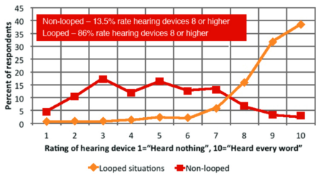
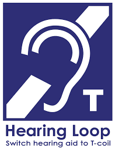

Hearing Loops: A Top Choice for Hearing Accommodation
Loops provide the greatest benefits to people who rely on assistive listening systems, and to venues required by the ADA to provide hearing accommodation.
Loops installed to the IEC 60118-4 standard (International Electrotechnical Commission) reliably deliver the cleanest sound to people with hearing loss—even to those with severe to profound hearing loss. Because of this and the many benefits listed below, hearing loops are becoming the foundation for hearing-friendly, inclusive communities throughout the United States.
User Benefits
Some of the many reasons hearing loops are the preferred assistive listening system by the majority of people with telecoil-enabled hearing aids and cochlear implants, and streamers:
- Easy to Use: To hear clearly, individuals simply switch their devices to the telecoil program and automatically receive clear customized sound. There is no need to arrive early, stand in line, or wait to return equipment after an event or meeting.
- Quality Sound: A hearing loop sends sound directly to the telecoil receiver in a user’s hearing device. The system eliminates most background noise and greatly improves understanding of speech and music. Additionally, the sound received is customized by each user’s unique hearing instrument.
- Discreet: Being able to hear well with a loop is inconspicuous; users do not stand out as being hard of hearing which encourages participation and inclusion.
- Better Hygiene: For people with hearing aids and cochlear devices, there is also no concern over the sanitation issues associated with wearing headsets or ear buds provided by venues and worn by other users.
- Versatile: Hearing loops provide effective, seamless communication across the broadest spectrum of environments—from auditoriums, theaters and places of worship, to meeting and class rooms, pharmacies, ticket counters and even in users’ homes.
- Transient Solution: A hearing loop enables clear sound for a person with hearing loss at pharmacies, information desks, subway ticket counters, and taxis, or when passing through airports and train stations.
Ask Your Audiologist About T-Coils
A 2014 study reported by Hearing Review asked 866 adult users of T-coil equipped hearing aids and cochlear implants to rate their ability to understand speech in places such as places of worship, theaters and auditoriums and conference rooms. Less than 14 percent rated their ability to hear without a hearing loop above a seven. However, while listening in a looped area, 86 percent rated their experience between eight and ten.

Venue Benefits
Hearing loops also provide significant advantages to venues, including:
- Easy to Administer: Because most users can connect to hearing loops directly, venues can reduce the assistive listening equipment needed for people without telecoil-enabled devices. This also reduces hygiene risks, because fewer people are using the same headphones or ear buds.
- Maximum Impact: Once installed, hearing loops are always active—meaning they can automatically accommodate one or many thousand users simultaneously and without any additional action on the part of the venue.
- Cost Effective: Once installed, hearing loops require minimum maintenance. But more importantly, because of all the user benefits—a hearing loop is an assistive listening system that is actually used by people with hearing loss.
- ADA Compliance: Loop technology meets all of the requirements for assistive listening systems as stipulated by the Americans with Disabilities Act—and is the only assistive listening system that automatically provides hearing aid compatibility via telecoils.
- Universal Access: Hearing loops are the internationally accepted standard for providing hearing accommodation. The universal symbol that identifies a venue as being equipped with loop technology welcomes people with hearing loss and communicates that their needs will be met in the best way possible.
- International Standards: IEC standards exist to ensure the manufacture and installation of hearing loops meet the needs of both venue and end user. See below for more information.
Hearing Is Believing!
Richard Einhorn is a composer who became a passionate hearing loop advocate after attending a performance at a looped theater. Richard describes hearing “perfectly clear, perfectly clean and incredibly rich live music” for the first time since he’d lost most of his hearing. The video below is a recording Richard made at a looped New York City subway ticket booth to show the dramatic difference a hearing loop system makes for people with hearing loss.
How Do Hearing Loops Work?
Hearing loops deliver intelligible, distortion-free speech and sound in places of public accommodation where distance, ambient noise and challenging acoustics otherwise make listening and understanding with hearing aids and cochlear implants virtually impossible.
 Graphic Courtesy of OTOjOY
Graphic Courtesy of OTOjOY
Technically known as Audio Frequency Induction Loop Systems (AFILS), hearing loops consist of a special amplifier and a hidden copper wire that transmits sound via a magnetic field. The wire creates a “looped zone” in any size venue from a large auditorium to a taxi. The wire sends the magnetic signal to any hearing device with a telecoil within the zone. A telecoil, or t-coil, is a small, inexpensive coil of wire inside a hearing aid that allows it to become a wireless receiver.
The Telecoil Imperative
Telecoils provide people with hearing loss, what wheelchair ramps provide people with mobility challenges – access. Telecoils are the essential gateway to hearing aid compatible assistive listening for people with hearing aids and cochlear implants. Telecoils receive the magnetic sound signal inside looped venues and also enable listening via infrared and FM system signals with the use of neckloops.
Consumer research indicates that, with the exception of the very smallest hearing aids that are invisible and fit completely in the canal, 81 percent of hearing aid models either come with t-coils or offer t-coils as an option. All cochlear implant processors have t-coils.
When buying a hearing aid, consumers should always ask that a telecoil be included and that the audiologist or dispenser activate the telecoil program at the time of fitting and explain its use. Note, although one can access a telecoil via a streamer, it is much easier to use if it is installed as a program in the hearing aid.
Loop Access for People Without a Hearing Aid or Telecoil Program
Hearing loop systems serve all people with hearing loss who wish to improve their ability to understand speech and sounds. As with FM and Infrared (IR) systems, hearing loops also offer accessibility via portable receivers and headphones or ear buds. You can also use a telecoil equipped streamer, personal amplifier or special telecoil-equipped ear buds and a smartphone.
Hearing Loop Installation Cost
When comparing loop system costs to alternative listening systems, consider this: a system that costs slightly more, but has many more users, will be most cost-effective. Hearing loops provide the greatest user satisfaction, are always used, and are preferred by staff because they are the easiest to administer and maintain. Also, loop systems require fewer portable receivers and headphones for those without telecoil-enabled hearing aids.
The cost of a looped system varies greatly depending on the location, size and construction of the venue. The following ranges are to provide loose estimates only.
• Ticket windows, pharmacy counters, information desks can cost $500 to $1,000.
• Conference rooms or small places of worship may cost between $2,500 and $4,500.
• A larger venue, such as a senior center, large place of worship or school auditorium can range from $5,000 to $35,000.
• The largest venues, such as performing arts centers or stadiums may cost anywhere from $75,000 to $150,000.
Hearing loops generally cost less when installations are done as part of new construction or renovation projects. This is because it may be easier to identify and overcome potential obstacles and because floors and ceilings may already be exposed, reducing labor costs for installers who do not need to lift existing carpets or flooring.
A hearing loop should be considered an investment in the venue’s or community’s hearing access infrastructure.
Choosing A Loop Installer
Facility managers and decision-makers should choose only trained and experienced loop installers willing to provide references. Installers should confirm that the installation meets the international standard IEC 60118-4 as developed under the auspices of the IEC (International Electrotechnical Commission). This standard defines the strength of the magnetic field, the frequency response and methods of measuring these requirements. It also specifies the maximum levels of electromagnetic background noise.
For more detailed information about hearing loops and proper loop installation and maintenance, download the Hearing Loop Systems: A Guide to Best Practice for Service Providers. This guide, provided by the International Hearing Loop Manufacturers Association (IHLMA), has been designed to help to ensure that whatever investment is made produces the best possible results for both the venue service provider and the end user.
Why Aren’t More Venues Looped?
Loop technology was pioneered in Europe where it is widely embraced and highly successful. When hearing accessibility in the United States was made a requirement of law in 1990 under the Americans with Disabilities Act, no distinction was made between loop systems and less expensive FM or IR systems. Although the ADA did require that systems provide access to “effective communication,” people with severe to profound hearing loss—for whom FM and IR systems often fall short—were slow to mobilize advocacy for hearing loops.
The ADA Standard for Accessible Design was updated in 2010 requiring that for renovation and new construction that at least 25% of receivers provided are hearing aid compatible—meaning that users do not have to remove their hearing aids to use the system. This dramatically raised the interest in and availability of hearing loops because loops are the only assistive listening systems that connects directly to telecoil-enabled hearing devices.
Hearing Loops in the U.S.: A Brief History
Consumer driven, nationwide advocacy for hearing loops began almost 20 years ago when David Myers, Ph.D., a professor of psychology at Hope College in Michigan, attended a religious service in an 800-year-old Scottish abbey with a hearing loop. Dr. Myers discovered that by pressing a button and activating the t-coils in his hearing aids, the words of the minister came into his ears – directly and crystal clear.
Dr. Myers’s subsequent enthusiasm—along with pioneering advocates in several states—sparked a growing loop advocacy movement in the U.S. In 2010, HLAA, in partnership with the American Academy of Audiology, joined the movement by launching Get in the Hearing Loop (GITHL), a campaign that has now become an ongoing program for HLAA.
Today, loops can be found throughout the United States, but advocacy continues to push for more and more loops as a way of creating hearing friendly communities.
Just a few examples of where you will find hearing loops today:
- Federal Government: the U.S. Supreme Court, Library of Congress, and the main chamber of the House of Representatives
- State and City Government: the legislative chambers and committee meeting rooms of the Arizona and Rhode Island statehouses, and city council chambers throughout the U.S.
- Museums: Museum of Modern Art (New York City), Kentucky Derby Museum (Louisville, KY), and the Chrysler Museum auditorium (Norfolk, VA).
- Stadiums: Yankee Stadium ticket booths and the entirety of the Michigan State University Breslin Center Arena
- Theaters: over 195 live theater, concert and event halls across 35 states, six Broadway theaters, two theaters at Lincoln Center, the Seattle Repertory Theater, and Boston’s Symphony Hall
- Hotels: Guest registration counter at the St. Louis Union Station Hotel and the Renaissance Arlington Capital View Hotel (Virginia)
- Transportation:
- San Francisco Bay Area Rapid Transit (BART) – 755 new trains and a pilot program for information booths and platforms
- New York City – over 1400 Taxis of Tomorrow and more than 600 New York City subway information and fare kiosks
- Amtrak’s ticket counters and customer service desks in a growing number of stations
- The Michigan Department of Transportation and Indian Trails Inc. installed hearing loops on 17 motor coaches serving passengers throughout Michigan
- New passenger ferries operated by the Massachusetts Bay Transportation Authority
- More than 10 international airports across the country, including Boston-Logan, Los Angeles, Minneapolis-St. Paul, and Indianapolis.
- And just plain cool: Ben and Jerry’s Ice Cream factory tours (Waterbury, VT), and the New York Botanical Garden
For even more information about hearing loops and frequently asked questions, visit the Get in the Hearing Loop page on this site and HearingLoop.org.